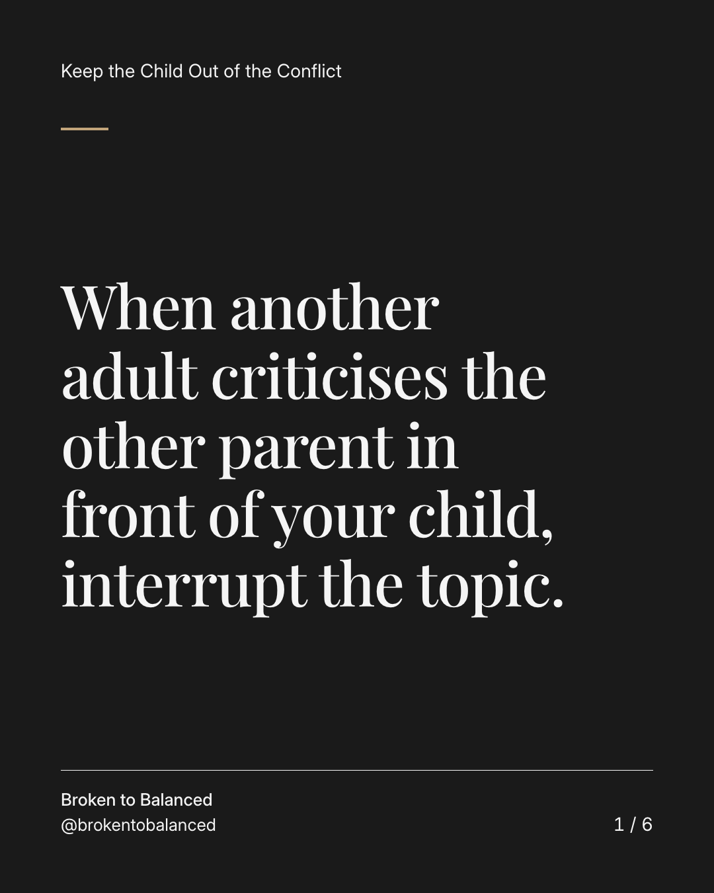
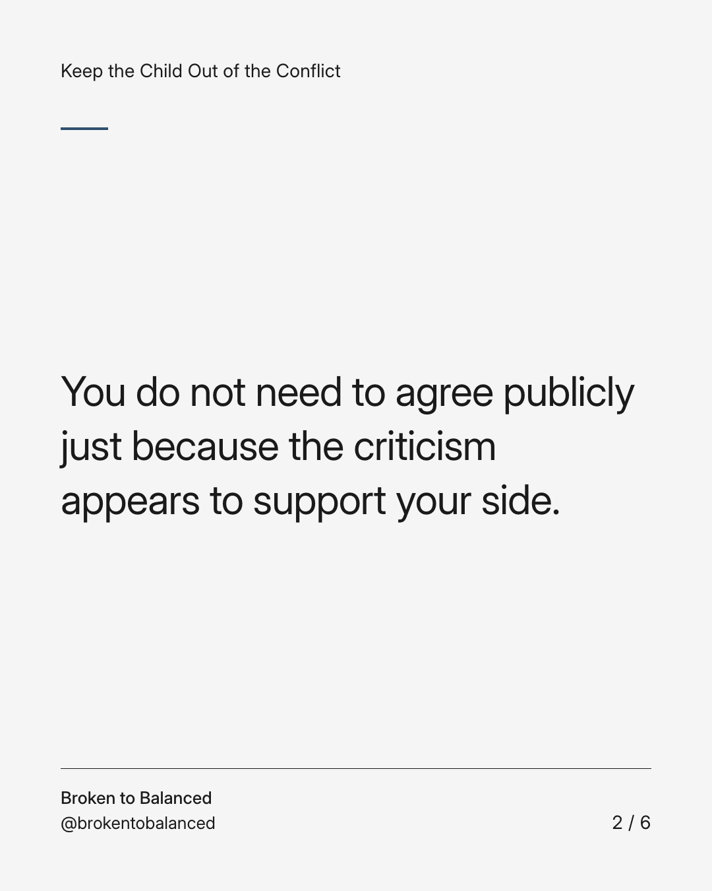
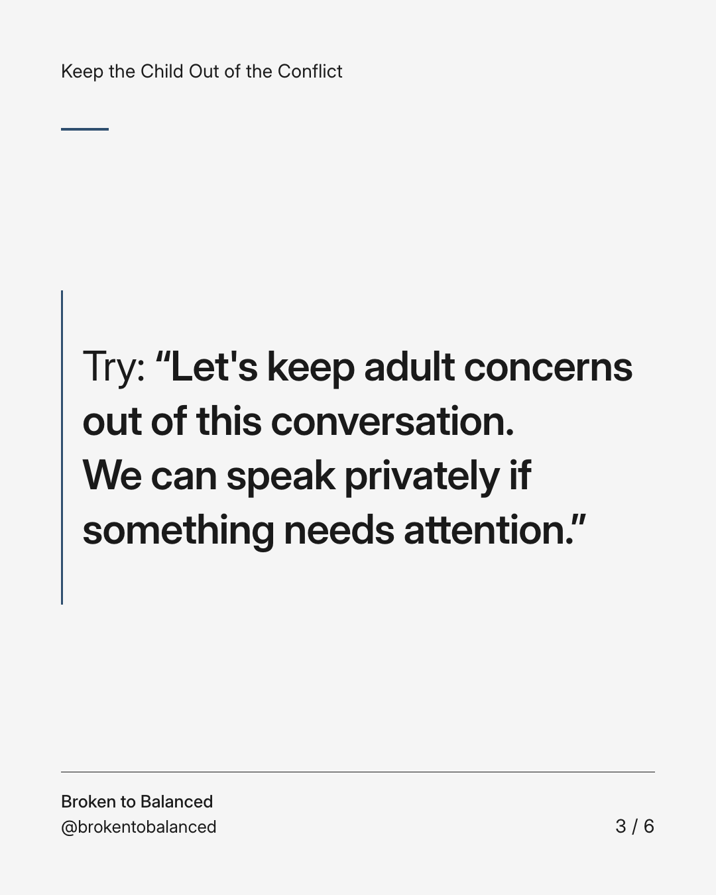
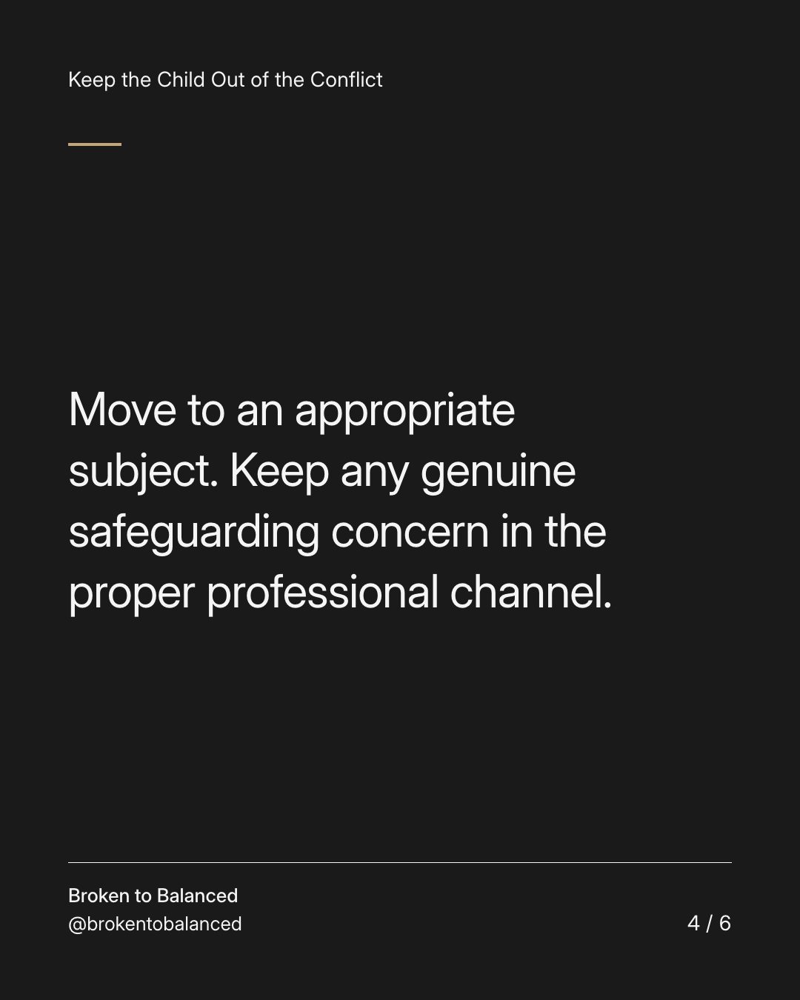
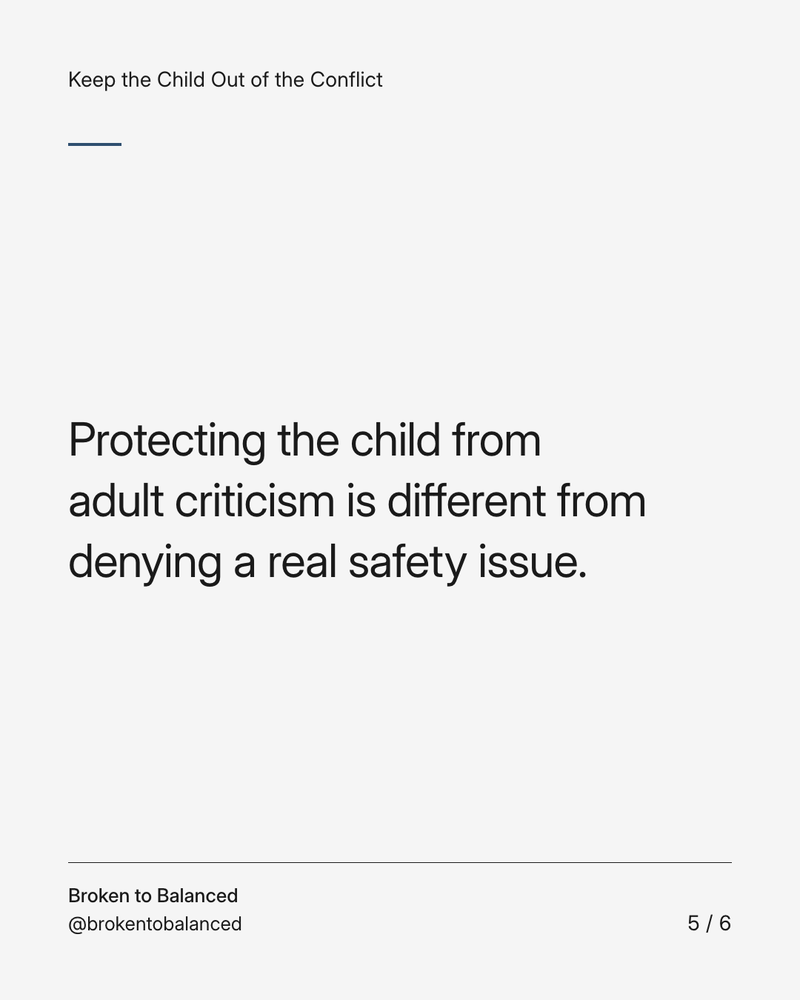
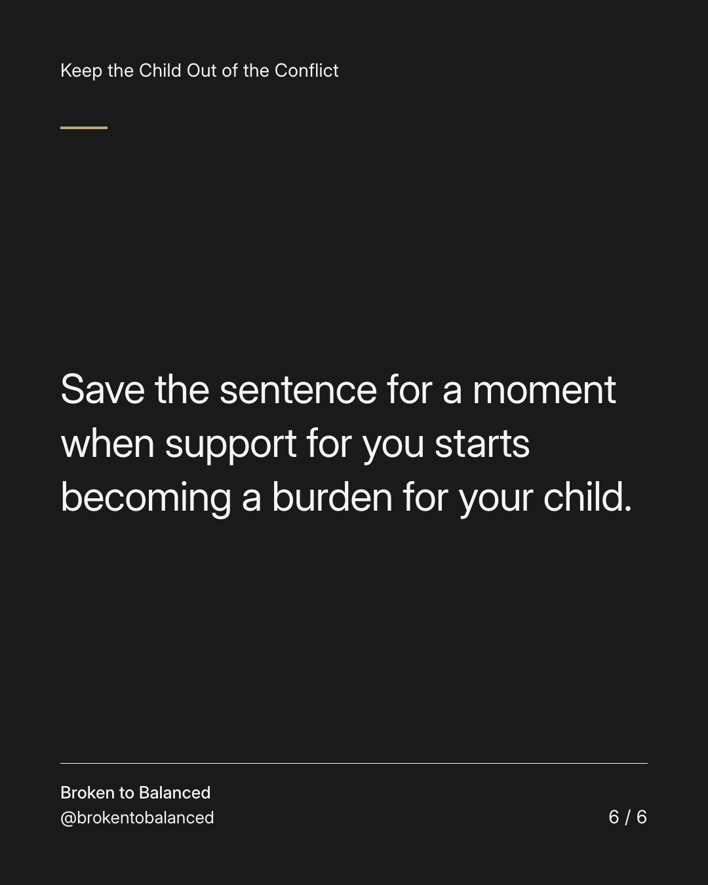

Exact text and accessibility text
When another adult criticises the other parent in front of your child, interrupt the topic.
Slide 1 of 6. When another adult criticises the other parent in front of your child, interrupt the topic.


Exact text and accessibility text
You do not need to agree publicly just because the criticism appears to support your side.
Slide 2 of 6. You do not need to agree publicly just because the criticism appears to support your side.


Exact text and accessibility text
Try: “Let's keep adult concerns out of this conversation. We can speak privately if something needs attention.”
Slide 3 of 6. Try: “Let's keep adult concerns out of this conversation. We can speak privately if something needs attention.”


Exact text and accessibility text
Move to an appropriate subject. Keep any genuine safeguarding concern in the proper professional channel.
Slide 4 of 6. Move to an appropriate subject. Keep any genuine safeguarding concern in the proper professional channel.


Exact text and accessibility text
Protecting the child from adult criticism is different from denying a real safety issue.
Slide 5 of 6. Protecting the child from adult criticism is different from denying a real safety issue.


Exact text and accessibility text
Save the sentence for a moment when support for you starts becoming a burden for your child.
Slide 6 of 6. Save the sentence for a moment when support for you starts becoming a burden for your child.
Exact caption
Plain-text fallback: select and copy the caption.